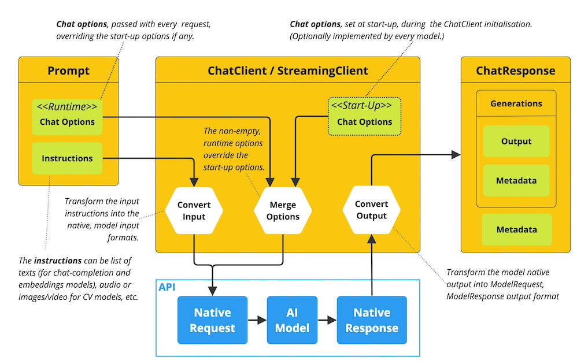

1. ChatClient
public interface ChatClient
extends ModelClient<Prompt,ChatResponse> {
default String call(String message) {}
@Override
ChatResponse call(Prompt prompt);
}2. StreamingChatClient
-
接收类似于ChatClient的Prompt请求，但使用Reactive Flux Api来流式传输响应；
public interface StreamingChatClient
extends StreamingModelClient<Prompt,ChatResponse> {
@Override
Flux<ChatResponse> stream(Prompt prompt);
}3. Prompt
-
Prompt是ModelRequest，封装Message对象和可选模型请求选项的列表
public class Prompt implements ModelRequest<List<Message>> {
private final List<Message> messageList;
private ChatOptions modelOptions;
@Override
public ChatOptions getOptions() {..}
@Override
public List<Message> getInstructions() {...}
}4. Message
-
Message接口封装一条文本消息、一组属性(如Map)和一个称为MessageType的分类；
-
消息接口有各种实现，对应于AI模型可处理的消息类别，术语MessageType可能意味特定的消息格式，
对于不使用特定角色的AI模型，UserMessage实现充当标准类别，通常表示用户生成的查询或指令；
public interface Message {
String getContent();
Map<String, Object> getProperties();
MessageType getMessageType();
}5. Chat Options
-
可传递给AI模型的选项，ChatOptions类是ModelOptions的子类，
定义可传递给AI模型的几个可移植选项： -
另每个特定于模型的ChatClient/StreamingChatClient
实现都可有自己的选项，这些选项可传递给AI模型：

public interface ChatOptions extends ModelOptions {
Float getTemperature();
void setTemperature(Float temperature);
Float getTopP();
void setTopP(Float topP);
Integer getTopK();
void setTopK(Integer topK);
}6. ChatResponse
-
ChatResponse类保存AI模型的输出，每个Generation实例包含单个提示可能产生的多个输出
中的一个，ChatResponse类还携带AI模型响应的ChatResponseMetadata元数据；
public class ChatResponse implements ModelResponse<Generation> {
private final ChatResponseMetadata chatResponseMetadata;
private final List<Generation> generations;
@Override
public ChatResponseMetadata getMetadata() {...}
@Override
public List<Generation> getResults() {...}
// other methods omitted
}7. Generation
-
Generation类从ModelResult扩展而来，输出辅助消息响应和有关此结果的相关元数据
public class Generation implements ModelResult<AssistantMessage> {
private AssistantMessage assistantMessage;
private ChatGenerationMetadata chatGenerationMetadata;
@Override
public AssistantMessage getOutput() {}
@Override
public ChatGenerationMetadata getMetadata() {}
}